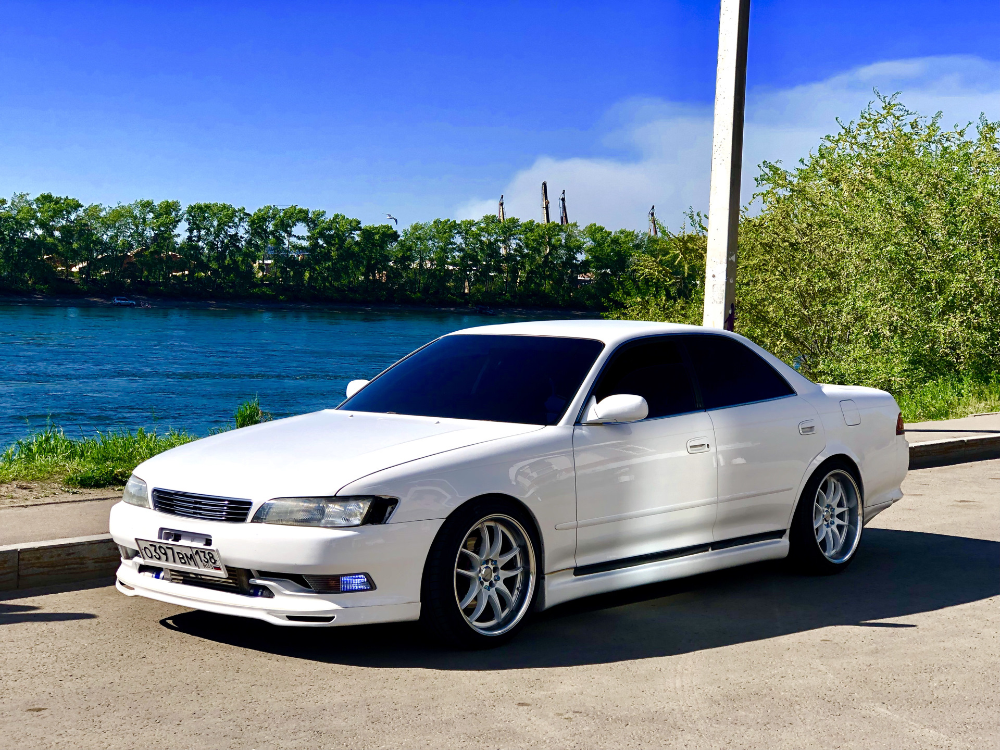
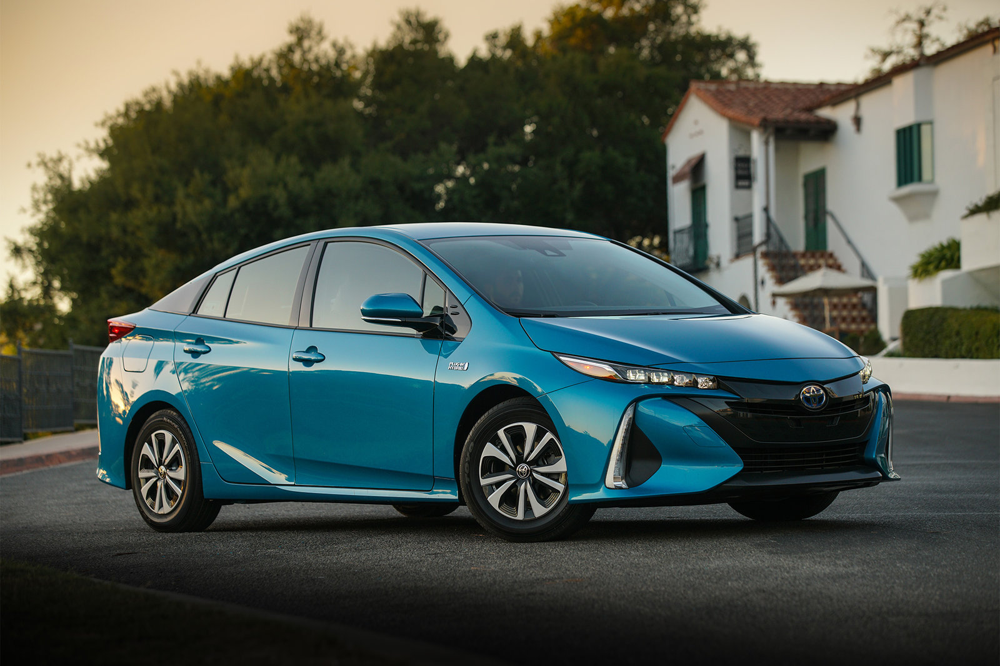
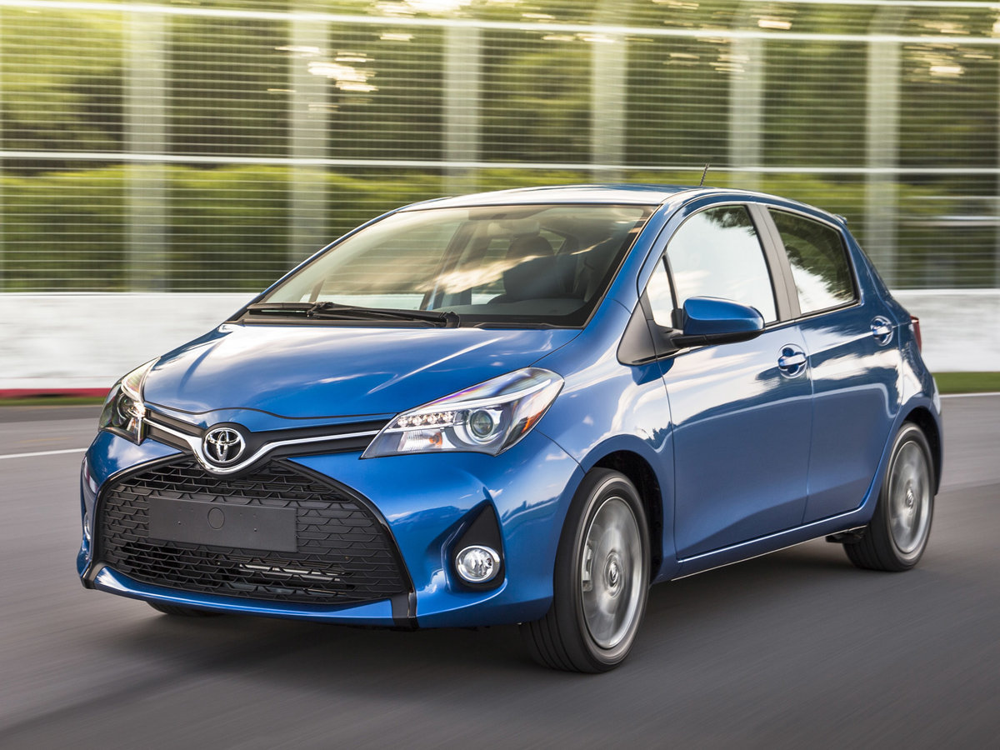
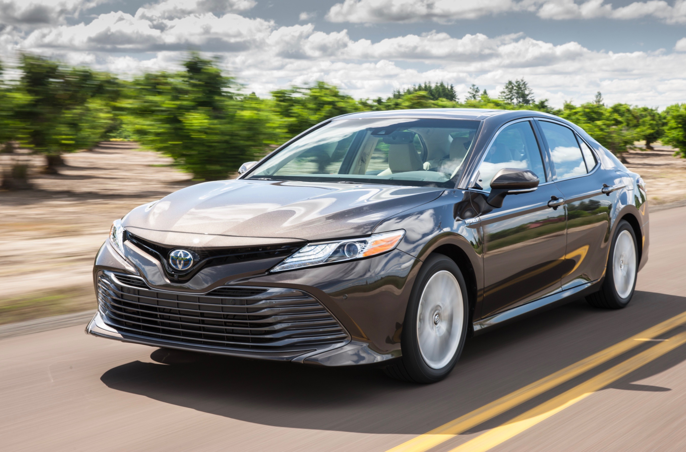
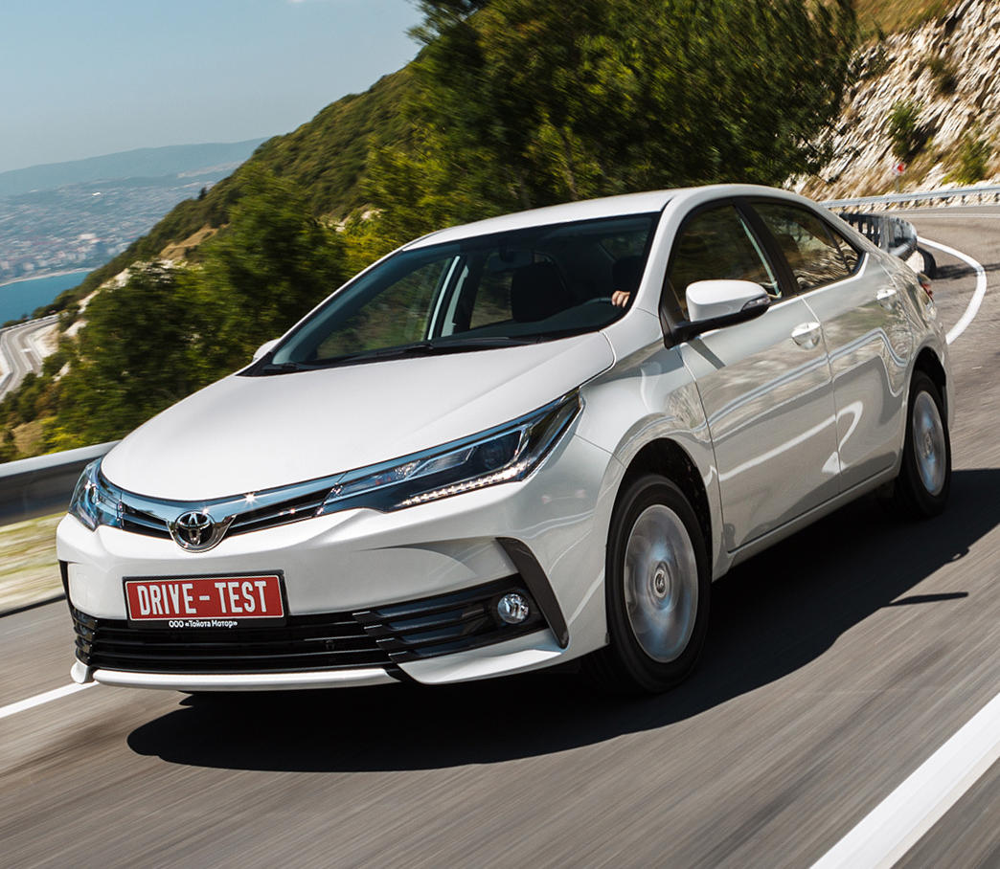

Автомобили, на которые точно следует обратить внимание
Автомобили, на которые точно следует обратить внимание
Особенно, если вы рассматиравете покупку машины

Среднеразмерный седан, выпускавшийся компанией Toyota с 1968 по 2004 годы. Наименование Mark II использовалось компанией Toyota на протяжении нескольких десятилетий и первоначально использовалось в составе названия Toyota Corona Mark II.
Рамный среднеразмерный внедорожник японского концерна Toyota. Первое поколение появилось в 1987 году. Prado существует в трёх- и пятидверном исполнениях, начиная со второго поколения внедорожник строился на одной платформе с моделью Toyota Hilux Surf.

Первый в мире массовый гибридный легковой автомобиль, который движется за счёт как бензинового, так и электрического двигателей, производимый японской корпорацией Toyota с 1997 года. Латинское слово prius в названии модели трактуется как первый, изначальный.
5-местный среднеразмерный кроссовер, производимый фирмой Toyota для североамериканского рынка. Модель позиционируется, как автомобиль для молодых семей, предпочитающих активный образ жизни. Venza была представлена 14 января 2008 года на Детройтском автосалоне.

Компактный автомобиль с кузовом хэтчбек, производимый японским концерном Toyota с 1999 года. Название Yaris является производным от Charis, Хариты — древнегреческие богини веселья и радости. На внутреннем рынке Японии этот же автомобиль называется Vitz [Виц].
Среднеразмерный автомобиль компании Toyota, выпускавшийся с 1997 по 2018 год. Модель предшественник — Toyota Carina E с 1992 года в Европе.

Автомобиль компании Toyota. Производится на заводах в Японии, США, Австралии, России и Китая, Таиланда. По состоянию на 2018 год выпускается восьмое поколение автомобиля. В соответствии с классификацией легковых автомобилей по формальному признаку, принятой в ЕС, автомобиль принадлежит к сегменту E — «Executive cars», по Euro NCAP — к «Large family car».
Спортивный автомобиль, выпускавшийся японской автопроизводительной фирмой Toyota Motor Corporation. На протяжении своей истории Celica комплектовалась разнообразными 4-цилиндровыми двигателями. Наиболее значимые изменения произошли в августе 1985 года, когда задний привод уступил место переднему.

Компактный автомобиль, выпускаемый компанией Toyota. Появившись в 1966 году, в 1974 году он попал в Книгу рекордов Гиннесса как самая продаваемая модель в мире. По данным книги, к декабрю 2000 во всем мире было продано 25 миллионов машин.

Является крупнейшей автомобилестроительной публичной компанией в мире, а также крупнейшей публичной компанией в Японии.